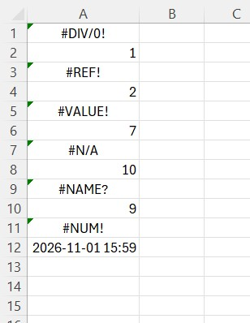
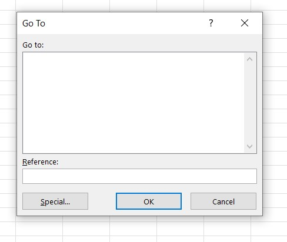
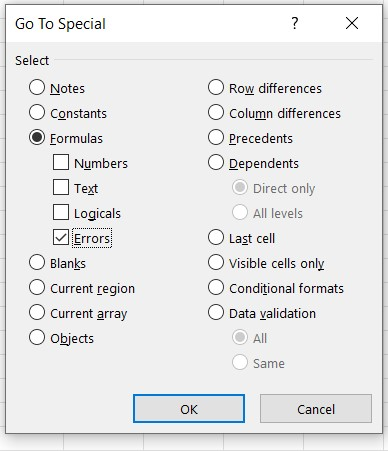
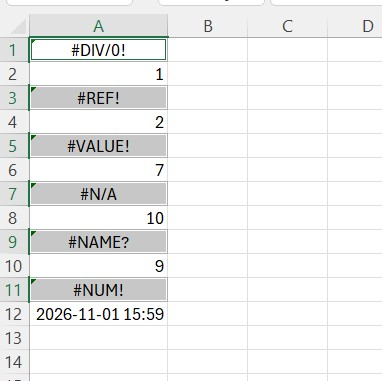
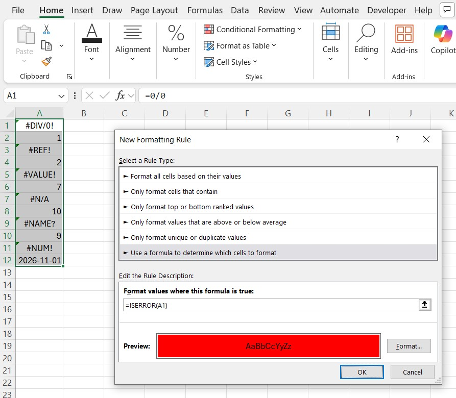
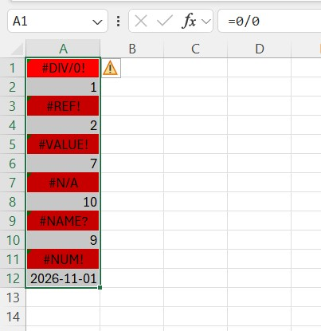
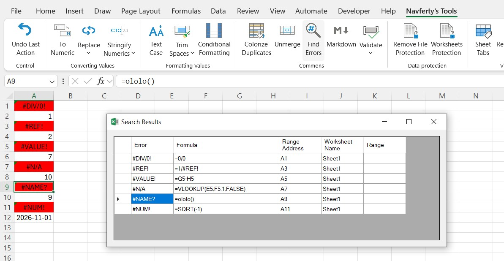

How to find all errors in Excel (#VALUE!, #REF!, #DIV/0!)
Ways to locate every formula error in a sheet, and what each error usually means.
A report that goes out with a #REF! in the totals looks bad, and in a large workbook a single error cell is easy to miss. Excel has a few built-in ways to find them all.
Example range used below, with the common error types:

Go To Special
Select the range (or press Ctrl+A for the whole sheet), then press F5 (or Ctrl+G) → Special… → Formulas and leave only Errors ticked. Excel selects every cell that currently shows an error. You can then fill them with a colour or step through them with Enter.



Limitation: it works per sheet, and it gives you a selection, not a list. You still have to jump around to see what is where.
Find with a wildcard
Press Ctrl+F, search for #, set Look in to Values and click Find All. This gives a list of cells with their addresses. It also finds legitimate text that contains a hash sign, so it is a bit noisy, and it does not work well if the sheet uses # in headers.
Conditional formatting
For a sheet that is edited constantly, a rule makes errors visible without any searching. Select the range, choose Home → Conditional Formatting → New Rule → Use a formula and enter (adjust A1 to the top-left cell of your selection):
=ISERROR(A1)

Pick a red fill. Any error that appears later is highlighted right away.
Mind the active cell. In a conditional formatting formula, a relative reference like A1 is relative to the active cell, which is not always the top-left cell of the selection. If you select the range from the bottom up, or click a cell in the middle before opening the dialog, the rule is shifted and some cells (typically the first rows) are not checked. The fix is to make the top-left cell active before creating the rule: select the range starting from its first cell, and check the Name Box (left of the formula bar) shows that address. You can also edit the rule later via Manage Rules and compare the formula with the top-left cell of Applies to.

Count them
To get a quick number for a checklist or a dashboard cell:
=SUMPRODUCT(--ISERROR(A1:Z1000))
ISERROR also treats #N/A as an error. If you want to leave #N/A out, use ISERR instead.
What the errors mean
#DIV/0!– division by zero or by an empty cell. Often a lookup that returned nothing or a month with no data yet.#VALUE!– the formula got the wrong type of value, typically text where a number was expected. A number with a trailing space or a text-formatted number is a very common cause (see converting text numbers).#REF!– the formula points to a cell that no longer exists, usually because a row, column or sheet was deleted.#N/A– a lookup found no match. Check for extra spaces and for numbers stored as text on either side.#NAME?– a misspelled function name, a missing quote around text, or a function that your Excel version does not have.#NUM!– an impossible numeric operation, such as the square root of a negative number, or a result too large for Excel.#NULL!– two ranges in a formula are separated by a space instead of a comma or colon, and they do not intersect.
Handling them
Wrapping everything in IFERROR makes the error go away, but it also hides real problems. Use it where an empty result is a normal outcome (a lookup that may find nothing) and let errors show everywhere else, so you notice when something breaks.
With the add-in
The Find All Cells Containing Errors command scans the selected range and shows a list of all error cells with their type. Clicking an entry jumps to that cell. It is handy when the errors are spread over a big range and you want to work through them one by one.

The add-in command for this: Find All Cells Containing Errors.